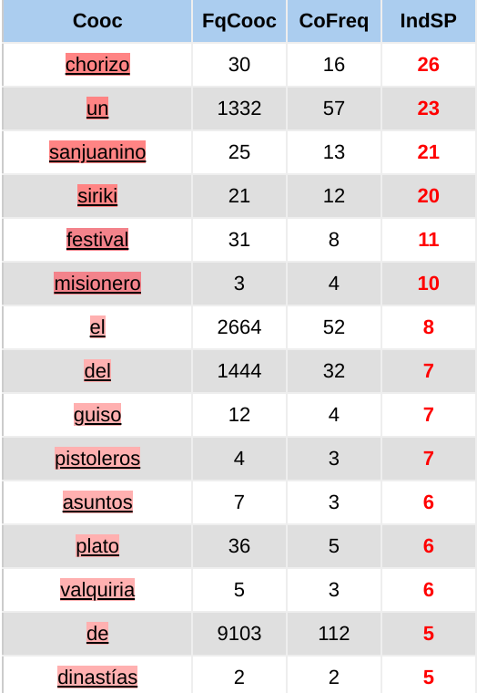
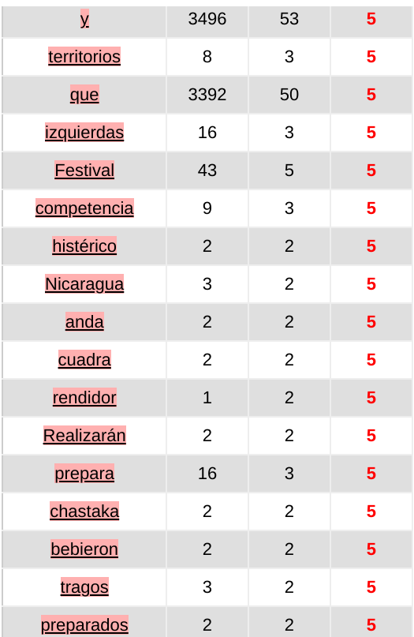

Itrameur
Méli-mélo
L'outil Itrameur fournit des méthodes de textométrie qui nous permettent d'observer des usages discursifs et des comportements linguistiques du mot. En ce qui concerne le mot méli-mélo, comme il est souvent entouré de coronales, de prépositions, etc. Dans le processus d'analyse du corpus et de génération du nuage avec itrameur, ces mots ont été filtrés afin de pouvoir analyser les noms, concepts et thèmes fréquemment utilisés.
Voici les cooccurrences trouvées avec l'outil Itrameur
Gastronomie
Parmi les mots cooccurents, on peut trouver les noms de produits alimentaires ainsi que les mots liés à la cuisine suivants :
- salade
- céréales
- légumes
- recette(s)
- gourmand
- brochettes
- crevettes
- courgettes
On peut remarquer que les gens utilisent ce mot plus souvent dans le contexte de la cuisine, en particulier lorsqu'ils décrivent des salades ou des plats sautés.
Par ailleurs, “méli-mélo” est souvent dans le nom de nombreux plats tels que "Méli-mélo de brochettes", "Méli-mélo de salade", "Méli-mélo de courgettes" etc. Il illustre bien la variété des aliments composant dans les plats.
Par ailleurs, il y a une variété de céréales à cuire ressemblant à une semoule et produite par la société Tipiak qui s'appelle méli-mélo : les trois mots clés "gourmand", "légumes" et "céréales" figurent sur l'emballage du produit, ce qui explique la fréquence élevée de ces trois mots dans les mots cooccurents.
Actualités
Dans le corpus des actualités, on peut voir que “méli-mélo” est souvent combiné avec les termes activités, photos, émotions, enquête et vacances, ce qui résume bien la variété des significations contenues dans ces termes.
Culture
Le “méli-mélo” n'apparaît pas seulement dans les noms de produits, mais aussi dans les noms de cabarets, de association, de films et de personnages d'animations. En ce qui concerne les personnages animés, il y a deux jumeaux tanukis Méli et Mélo présents dans la série de jeux-vidéos Animal Crossing. Ils sont les deux employés de Tom Nook et aussi ses neveux. Dans Animal Crossing: New Leaf, ils ont leur propre magasin, tandis que Tom Nook devient agent immobilier.
大杂烩
L'outil Itrameur ne fonctionnant pas avec le chinois, il a fallut utilisé SketchEngine pour l'analyse, qui fournit des méthodes de textométrie similaires à Itrameur.
Et voici les n-grammes trouvés avec SketchEngine:
Mots généraux
- 各种 (gè zhǒng): toutes sortes de. Ce mot, utilisé comme classifieur en chinois, est proche du sens de 大杂烩, qui est un nom, et s'emploie facilement avec !
- 是一个 (shì yī gè): c'est un. On retrouve ces formulations dans la recherche de N-grammes. On dit souvent "c'est un méli-mélo".
- 大杂烩式 (dà zá huì shì): de façon désordonnée. On retrouve notre mot 大杂烩 suivi du morphème 式, qui signifie "la façon, la méthode" et transforme un nom en déterminatif.
- 锅 (guō): pot. Il s'agit d'un classificateur de marmites, de casseroles, que l'on retrouve dans le synonyme de 大杂烩, "一锅粥" (une marmite de porridge)! Nous le retrouvons en tant que classificateur du mot 大杂烩 (一锅大杂烩), avec parfois un adjectif venant s'immiscer entre les deux. Parfois, il est utilisé dans un contexte parlant de nourriture, 大杂烩 ayant aussi le double sens d'un plat constitué de beaucoup d'ingrédients mélangés !
Dans le corpus, on retrouve aussi 盘 (pán), une assiette, comme classificateur de 大杂烩. - 成 (chéng): devenir. On parle de "devenir un méli-mélo" lorsque quelque chose passe d'un état clair, concis à un état chaotique.
- 概念 (gài niàn): concept. Souvent utilisé comme modifié de 大杂烩 pour dire un concept complexe, composé de beaucoup d'éléments.
Politique
- 中国 (Zhōngguó): la Chine. Beaucoup d'articles employant le mot 大杂烩 parlent de politique, d'économie...
- 谎言 (huǎngyán): mensonge. Ce mot est très utilisé avec 大杂烩: un méli-mélo de mensonges. Bien que le mot dazahui ne soit pas péjoratif, cette formulation signifie qu'il y a beaucoup de mensonges.
- 美国 (Měiguó): les États-Unis. La Chine est rivale des États-Unis et, lorsque l'on veut dire que les États-Unis font beaucoup de choses sans qu'elles soient coordonnées, on peut parler de 大杂烩. Dans l'un des contextes, ce mot a même été utilisé avec mensonge : "les Etats-Unis publient un méli-mélo de mensonges".
- 中共 (zhōnggòng): le Parti Communiste Chinois. Utilisé avec 大杂烩, il s'agit souvent de critiques du gouvernement. Par exemple : 不 过 他 也 强调 , 中共 的 论述 是 个 " 大杂烩 " , 很多 时候 并 没有 严密 的 逻辑 。(Mais il pointe aussi du doigt que les discussions du Parti Communiste Chinois sont un "méli-mélo", souvent, il n'y a pas de logique stricte.)
- 政治 (zhèngzhì): la politique. La plupart du temps, utilisé dans ce groupe de mots : "政治谎言的大杂烩" (un méli-mélo de mensonges politiques).
Nourriture
Contrairement au français ou à l'espagnol, le mot 大杂烩 est très rarement employé dans le contexte de la nourriture. Il est plutôt employé au sens figuré.
- 吃 (chī): manger. Ce mot est présent en particulier sur des sites gastronomiques.
- 火锅 (huǒguō): hotpot, fondue. Le mot hotpot, en anglais, peut aussi vouloir dire méli-mélo, si l'on ajoute le phonème "ch" après chaque syllabe, de cette façon: hotchpotch, hodgepodge. C'est amusant de retrouver le mot hotpot et 大杂烩 sur de nombreuses pages culinaires, démontrant de la proximité de ces plats et de la précision de notre traduction !
- 美食 (měishí): gastronomie.
International
- 文化 (wénhuà): la culture. Ce mot est utilisé fréquemment avec 大杂烩 pour parler de mélange culturel au sein d'un même groupe, tout comme l'on mélangerait des ingrédients totalement différents dans une même casserole !
- 世界 (shìjiè): le monde.
Art

- 部 (bù): partie. Il s'agit aussi d'un classificateur, souvent utilisé avec les films, les romans... Cependant, lorsque 大杂烩 est utilisé dans un contexte pour parler d'une histoire, il ne sera pas employé avec le classificateur 锅, mais bien avec le classificateur 部 ! Par exemple : " 集 奇幻 、 悬疑 和 爱情 於 一体 , 是 一 部 大杂烩 一样 的 剧作 " (Mêlant fantaisie, suspense et romance, il est tel un méli-mélo théâtral.).
- 剧 (jù): théâtre, pièce. Le classificateur de ce mot est aussi 部.
- 电影 (diànyǐng): film. De même, le classificateur de ce mot est 部. Ces deux mots sont aussi des noms et ne peuvent pas former de syntagme avec 大杂烩. C'est la raison pour laquelle ils sont utilisés en parallèle avec 大杂烩, souvent via l'emploi d'une reformulation, pour comparer ce film ou cette pièce de théâtre à un méli-mélo de genres, d'émotions...
- 观众 (guānzhòng): spectateur.
Cooccurrences
Voici les cooccurrences du mot 大杂烩. Beaucoup reprennent ce qui a été vu plus haut, mais on permet aussi de déceler plus finement ses emplois grammaticaux.
Dans la catégorie N_Modifiers (classifieurs), on trouve davantage de classificateurs:
- 株 (zhū): classificateur de plantes
- 张 (zhāng): classificateur d'objets plats
- 道 (dào): classificateur d'odeurs planant dans l'air (ou de routes)
Dans la catégorie Object_of, on trouve les verbes suivants :
- 混搭 (hùndā): (se) mélanger, suivi d'un nom (au pluriel) et de 大杂烩.
- 组合 (zǔhé): (se) combiner. On l'emploie de la même façon: un nom au pluriel ou plusieurs noms, puis 成 (chéng): devenir, enfin 大杂烩.
- 像 (xiàng): ressembler à. Celà ressemble à un méli-mélo de XXX, pour dire que ça ne semble pas organisé.
- 看似 (kàn shì): sembler être. Pareil que dans l'exemple précédent.

Dans la catégorie A_Modifier, on trouve des adjectifs et d'autres verbes transformés en formes adjectivales par 的 (de):
- Tous les verbes en 成 (chéng): 组成 (zǔchéng), 构成 (gòuchéng), 成 (chéng), qui veulent dire respectivement composer, constituer, devenir. On peut dire "A, B et C composent/constituent/deviennent un méli-mélo."
- 混乱 (hǔnluàn): confus, désordonné, chaotique. Un méli-mélo chaotique.
Dans la catégorie Possession, c'est 大杂烩 qui est placé avant le nom qui le modifie. Il peut prendre tous les sens que l'on lui attribue depuis le début."
- 食品 (shípǐn)，事物 (shíwù): nourriture (sens propre).
- 专辑 (zhuānjí): un album. On retrouve la catégorie "art".
- 喜剧 (xǐjù): une comédie. "Un méli-mélo de comédies hilarantes"
Batiburrillo
L'outil Itrameur fournit des méthodes de textométrie qui nous permettent d'observer des usages discursifs et des comportements linguistiques du mot.
Voici les cooccurrences trouvées avec l'outil Itrameur
 Gastronomie
On retrouve parmi les mots cooccurents, les marqueurs géographiques suivants :
- san juanino
- misionero
- Nicaragua
- territorios
On note ainsi plusieurs plats traditionnels paraguayens : chastaka, siriki... Cependant, on retrouve également l'expression dans de multiples articles présentants des recettes latines diverses : notamment sur le site El Comidista (où nous avons trouvé plusieurs articles pour notre corpus), rafilié au journal quotidien madrilène El Pais, ce qui montre bien l'étendue géographique de l'utilisation du mot : batiburrillo est loin de n'être restreint qu'au Paraguay.
Politique & actualité
De nombreux articles de presse récents, citent régulièrement l'expression batiburrillo de izquierdas ou encore batiburrillo rancio de izquierdas (traduction litérale : ce méli-mélo rance/vieux de gauches), pour désigner le "bazar" politique de l'union des partis de gauche en Espagne (IU, comparable à la NUPES en France). Grandement utilisée par l'opposition, batiburrillo prend ici une connotation particulièrement péjorative.
À noter que l'expression batiburrillo rancio de izquierdas, utilise deux mots donc propre à la cuisine, aux aliments. Cette dernière joue sur le sens figuré et le sens propre du mot.
Culture
Dans les critiques de films & séries, batiburrillo porte quasiment toujours une connotation péjorative. Il désigne alors un fouilli, un désordre, un véritable bazar dans lequel on ne se retrouve pas. Dans le corpus constitué, seul un article, une critique du dernier album de Rosalia, MOTOMAMI, utilisait batiburrillo à une fin méliorative du projet de l'artiste.
"Motomami" de Rosalia, el batiburrillo perfecto de su tiempo (Source)